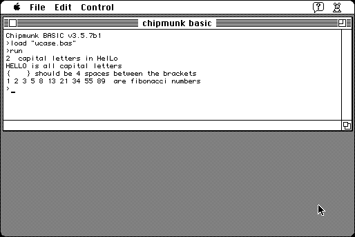

Download
Chipmunk_Basic_3.5.7.zip (291K) Chipmunk BASIC 3.5.7 repackaged into a zipped hfs disk image and checksum file. The disk image can be mounted with Mini vMac.
Chipmunk_Basic_3.5.7.hqx (401K) Chipmunk BASIC 3.5.7 in the original format.
copyright: Ronald H. Nicholson, Jr.
mod date: May 27, 2000
license: free for non-commercial use
from url :
Chipmunk BASIC
Basic interpreter, for System 7 thru Mac OS 9.

Version 3.5.6 is also available, for System 6.
Chipmunk_Basic_3.5.6.zip (291K) Chipmunk BASIC 3.5.6 repackaged into a zipped hfs disk image and checksum file. The disk image can be mounted with Mini vMac.
Chipmunk_Basic_3.5.6.hqx (406K) Chipmunk BASIC 3.5.6 in the original format.
If you find these downloads useful, please consider helping the Gryphel Project, which hosts them.
Here are the md5 checksums for the downloads, signed with Gryphel Key 5:
--------- GRY SIGNED TEXT --------- 55024601d54a2d4a94b954e50360b5ce Chipmunk_Basic_3.5.7.zip 67d41aaf1b45605247e056f111041195 Chipmunk_Basic_3.5.7.hqx 25c152b417eebf6399632de8401c14ed Chipmunk_Basic_3.5.6.zip 23aef3865955f7383a929fc4badad069 Chipmunk_Basic_3.5.6.hqx ------- BEGIN GRY SIGNATURE ------- Gry/4Xa8CFcUzxdN/CckwKGJ9LW9c/LKXKBeQgbXZsNlka7ez+CnrmjB93maYqmV KII+ts7w6vMEItZN2Ijbvd45JzX+LBKS/5YCD807yKpClk9TgclkVTL0ioTUoeO+ pK18IwQSyiQwpV5oHfClIo1dEMp491W/+9UdSoEOd8rwiuvUdnOQ9RmunD6Ps/2v -------- END GRY SIGNATURE --------